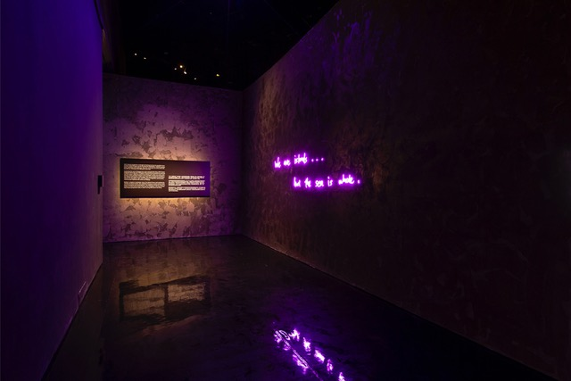
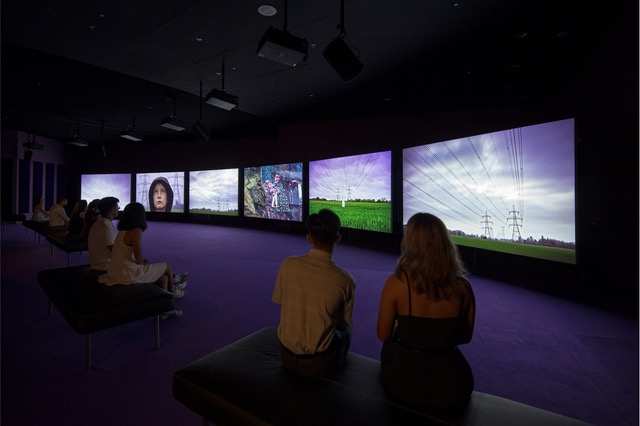
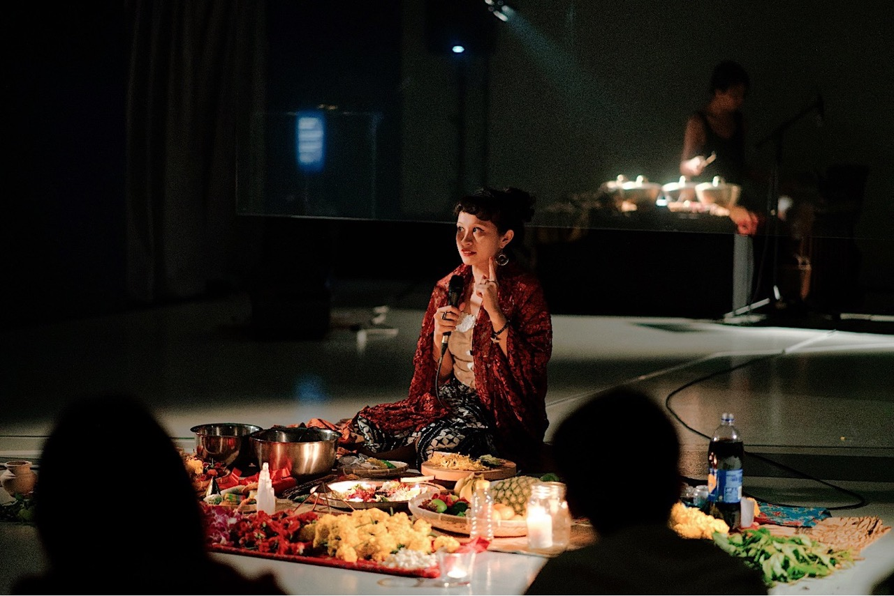
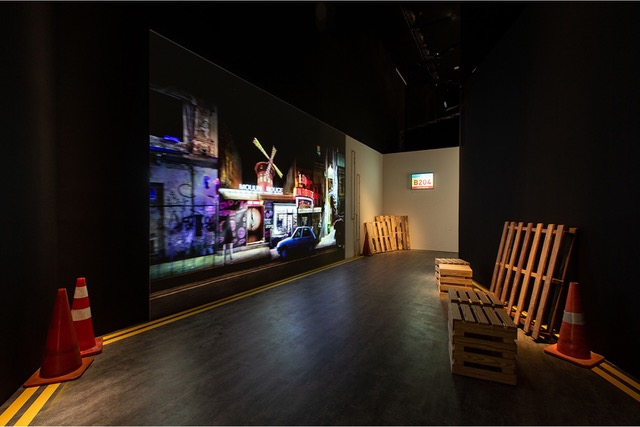
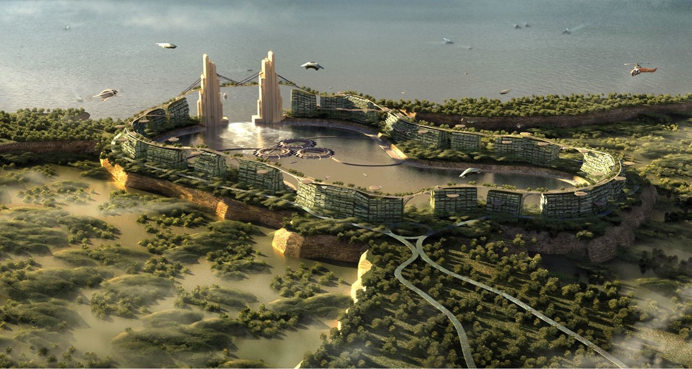

Singapore's Bicentennial in 2019 invited reflection on the past. 2219: Futures Imagined turned that impulse 200 years forward, asking what traces of the present might be carried into an unimaginable future. Rather than mapping predictions, the exhibition gathered over 30 artists from across the globe to imagine "small futures": intimate, generational narratives shaped by climate change, ecological loss, and the quiet persistence of human connection.
Visitors moved through immersive installations that invited them to physically inhabit possible worlds. Superflux's Mitigation of Shock placed them inside a near-future apartment where food was grown on every available surface; Robert Zhao Renhui's work meditated on extinction and archive; John Akomfrah's Purple confronted the slow violence of rising seas. The exhibition's premise was that "experiential futures" could do what data alone cannot: make the stakes of climate change felt, not merely understood.
The original concept came from the poet Alvin Pang, and the show was shaped in close collaboration with writers, scientists, and artists from Singapore and around the world. 2219: Futures Imagined opened at ArtScience Museum on 23 November 2019 and ran until August 2020, forming part of Singapore's national Bicentennial commemoration.

Honor Harger
Original concept: Alvin Pang
Larry Achiampong · John Akomfrah · Sarah Choo · Finbarr Fallon · Adeline Kueh · Zarina Muhammad · Lisa Park · Rimini Protokoll · Superflux · Robert Zhao Renhui · Donna Ong · Gene Tan · Annie Kwan · Adriel Luis
ArtScience Museum · Singapore Bicentennial Office · Marina Bay Sands



